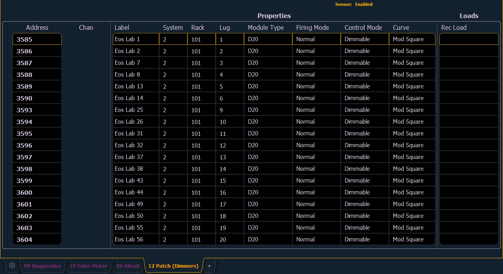
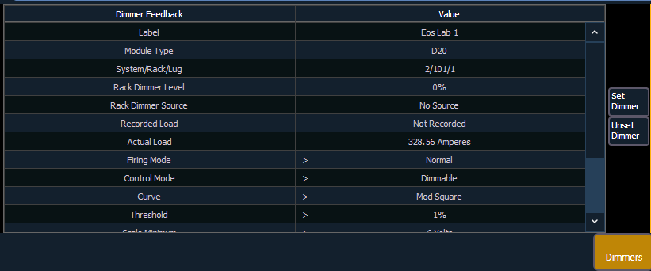

Note: For Dimmer Feedback, these software versions are required: CEM+ v3.0 and newer, CEM3 v1.3.1 and newer, and FDX v3.4.0 and newer.
To use the Dimmer Feedback area of the Device List, you must first enable feedback. In the network tab of the ECU, when using CEM+ or CEM3, make sure {Sensor/ FDX3000 Feedback} is enabled, or when using FDX 2000/ 3000, make sure that {Sensor/ FDX3000 Feedback} or {FDX2000 Feeback} is enabled. The default setting is disabled for both. See Interface Protocols
Open the Dimmer Feedback display while in the Patch display by pressing {Device List}> {Dimmers}. When the dimmer list is opened, the dimmers will be displayed in Patch by Address mode.

Ion will display the following information that it receives from the dimmers:
Note: The System ID number from CEM3 is not currently supported.
Note: Rack numbers and dimmer numbers need to be unique for Ion to properly recognize them. For CEM+, dimmers also need to be patched to different sACN addresses.
With a dimmer or dimmers selected, you can edit various dimmer settings in the property view, which will display in the CIA. Items with a caret (>) are editable. When multiple dimmers are selected together for editing, an “*” will show for data that is different between the selected dimmers.

FDX dimmers will not display data for the following:
Note: When dimmers are discovered, they are not automatically attached to patched channels in Ion; you must attach a dimmer to a channel. See Patching Discovered Dimmers and RDM Devices